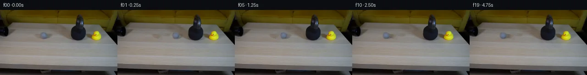

![首帧]()

Round 00
2026-11-05T20:32:42.880736+00:00像素候选变化代码 +170/−0inspection 更新
pixels 27564d23fea43575 · code 67e4344882065767
查看本轮 generate.py 真实 diff
--- previous/generate.py
+++ current/generate.py
@@ -0,0 +1,170 @@
+"""Continue the supplied photographic scene using local source-pixel compositing."""
+from pathlib import Path
+import json
+import math
+import numpy as np
+from PIL import Image, ImageDraw
+from scipy.ndimage import gaussian_filter, map_coordinates
+from scipy.special import erf
+import cv2
+from artifact_io import save
+
+ROOT = Path(__file__).resolve().parent
+SOURCE = np.asarray(Image.open(ROOT / 'first_frame.png').convert('RGB'))
+H, W = SOURCE.shape[:2]
+YY, XX = np.mgrid[:H, :W].astype(float)
+CX, CY, RADIUS = 95.5, 56.0, 7.5
+
+
+def smoothstep(a, b, value):
+ v = np.clip((value-a)/(b-a), 0, 1)
+ return v*v*(3-2*v)
+
+
+# Remove only the original ball and its cast shadow. The masked tabletop is
+# reconstructed from nearby pixels with a local Navier-Stokes inpainting pass.
+body_footprint = ((XX-CX)/9.7)**2 + ((YY-CY)/9.0)**2 < 1
+shadow_footprint = ((XX-103.0)/12.8)**2 + ((YY-57.9)/6.0)**2 < 1
+repair_mask = (body_footprint | shadow_footprint).astype(np.uint8)*255
+plate_u8 = cv2.inpaint(SOURCE, repair_mask, 4, cv2.INPAINT_NS)
+PLATE = plate_u8.astype(float)
+
+# Recover a small sphere sprite from the actual first-frame colors. The edge
+# alpha describes the photographed soft silhouette, allowing the original
+# tabletop color to be removed rather than carried to a new location.
+sy, sx = np.mgrid[44:69, 83:109].astype(float)
+r = np.hypot(sx-CX, sy-CY)
+source_alpha = 0.5*(1-erf((r-RADIUS)/(0.7*np.sqrt(2))))
+source_rgb = SOURCE[44:69, 83:109].astype(float)
+source_bg = PLATE[44:69, 83:109]
+foreground = (source_rgb-(1-source_alpha[..., None])*source_bg) / np.maximum(source_alpha[..., None], .08)
+foreground = np.clip(foreground, 0, 255)
+# Extend reliable edge colors beyond the support for safe interpolation.
+outer = source_alpha < .08
+foreground[outer] = np.array([104., 113., 126.])
+shading = gaussian_filter(foreground, (1.15, 1.15, 0))
+texture = foreground-shading
+
+# The source's diffuse cast shadow extends to the right. Extract it as a
+# relative luminance decrease and suppress all parts belonging to the ball.
+lum_weights = np.array([.2126, .7152, .0722])
+source_lum = SOURCE.astype(float) @ lum_weights
+plate_lum = PLATE @ lum_weights
+shadow_ratio = np.clip((plate_lum-source_lum)/np.maximum(plate_lum, 1), 0, .28)
+shadow_support = ((XX-103)/12.6)**2 + ((YY-58)/5.7)**2
+shadow_ratio *= (1-smoothstep(.70, 1.05, shadow_support))
+shadow_ratio *= smoothstep(7.0, 9.2, np.hypot(XX-CX, YY-CY))
+shadow_ratio = gaussian_filter(shadow_ratio, .6)
+
+# Initial approach velocity is 126 px/s. At the sampled impact, use an
+# effective restitution of 0.535, then rolling deceleration of 30 px/s^2.
+# This smoothly reaches rest 2.247 s after impact.
+IMPACT_X = 148.5
+REBOUND_V = 67.4
+DECEL = 30.0
+STOP_TIME = REBOUND_V / DECEL
+STOP_X = IMPACT_X - REBOUND_V**2/(2*DECEL)
+
+
+def ball_state(t):
+ if t < .5:
+ return CX+126*t, 126.0, False
+ if t == .5:
+ return IMPACT_X, 0.0, True
+ elapsed = min(t-.5, STOP_TIME)
+ x = IMPACT_X-REBOUND_V*elapsed+.5*DECEL*elapsed**2
+ v = -max(0, REBOUND_V-DECEL*elapsed)
+ return x, v, False
+
+
+def sample_rgb(array, sample_y, sample_x):
+ return np.stack([map_coordinates(array[..., c], [sample_y, sample_x],
+ order=1, mode='nearest') for c in range(3)], axis=-1)
+
+
+def render_ball(x, velocity, impact):
+ out = PLATE.copy()
+ # Translate the source shadow, keeping its light direction fixed.
… diff truncated; 83 more lines …